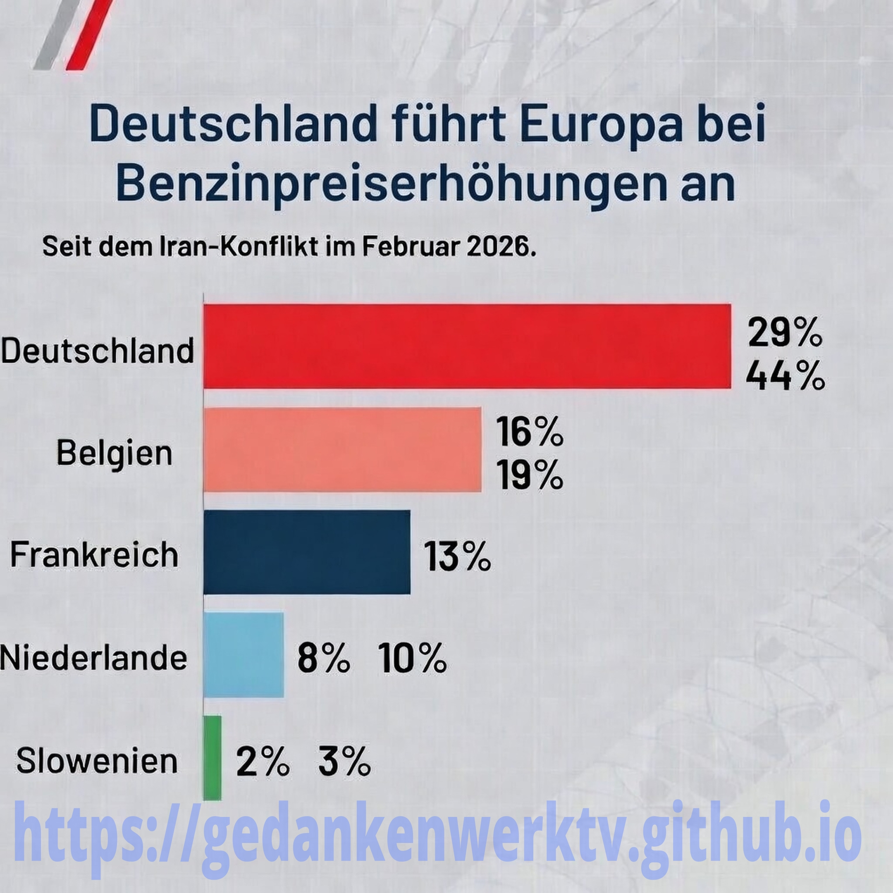

Deutschland ist fragwürdiger Europameister - Zumindest was die Benzinpreise angeht.

Deutschland fragwürdiger Spitzenreiter beim Spritpreisanstieg in Europa – ein EU-weiter Negativrekord

21.03.2026
Seit dem Beginn der militärischen Eskalation im Nahen Osten Ende Februar 2026 – oft als Iran-Konflikt oder Nahost-Krieg bezeichnet – haben sich die Kraftstoffpreise in Deutschland explosionsartig verteuert. Die Steigerung fällt hierzulande sogar so dramatisch aus, dass Deutschland in der gesamten Europäischen Union klarer Spitzenreiter beim Preisanstieg ist. Das bestätigen aktuelle Analysen der Monopolkommission, der EU-Kommission und des ADAC eindeutig und wiederholt.
Nach den offiziellen Zahlen der Monopolkommission (Stand Mitte März 2026) hat sich der Preis für Benzin vor Steuern und Abgaben um etwa 29% erhöht. Beim Diesel liegt der Anstieg sogar bei bis zu 44%. Diese Werte beziehen sich auf den Vergleich zwischen der Woche vor Kriegsbeginn (Ende Februar) und der aktuellen Woche im März. Im EU-Durchschnitt stieg Benzin nur um 16% und Diesel um etwa 29%. Deutschland übertrifft damit den europäischen Mittelwert bei weitem, also fast um das Doppelte – ein Unterschied, der nicht allein durch globale Ölpreisschwankungen erklärt werden kann.
Der Vorsitzende der Monopolkommission, Tomaso Duso, formulierte es klar: „Deutschland ist beim Preisanstieg Spitzenreiter.“ Er verwies explizit darauf, dass der zugrunde liegende Brent-Ölpreis im selben Zeitraum nur um etwa 27 Prozent gestiegen ist. Während der Weltmarkt also um 27 Prozent zulegte, hat Deutschland beim Benzin diesen Wert bereits überschritten und beim Diesel massiv übertroffen. In keinem anderen EU-Land zeigt sich eine vergleichbare und derart extreme Überreaktion.
Hier ein direkter Vergleich mit anderen EU-Ländern:
In Belgien lag der Anstieg beim Benzin (vor Steuern) bei etwa 16 Prozent, in Frankreich bei 11 Prozent, in den Niederlanden bei 8 Prozent und in Slowenien lediglich bei 2 Prozent (siehe Grafik). Länder mit stärker regulierten Märkten oder niedrigeren nationalen Abgaben zeigten deutlich mildere Entwicklungen. Selbst im direkten Nachbarvergleich – etwa zu Österreich, wo eine ähnliche Preisbremse bereits länger gilt – fallen die deutschen Steigerungen überproportional hoch aus.
Aktuelle Preise an den deutschen Tankstellen – Stand 19./20.
März 2026 Der ADAC meldet für den bundesweiten Durchschnitt: Ein Liter Super E10 kostete am 19. März im Tagesdurchschnitt etwa 2,068 Euro, in der morgendlichen Spitze am 20. März sogar 2,147 Euro. Diesel lag am 19. März bei 2,229 Euro im Schnitt und erreichte am 20. März in der Frühspitze sogar 2,324 Euro. Diese Werte schwanken stark je nach Uhrzeit und Region – oft ziehen Preise morgens kräftig an und sinken tagsüber etwas ab.
Vor der Eskalation Ende Februar lagen die Durchschnittspreise deutlich niedriger: Super E10 bewegte sich um 1,74 bis 1,76 Euro, Diesel um 1,70 bis 1,75 Euro. Der reale Anstieg an der Zapfsäule beträgt somit bei Benzin etwa 0,30 bis 0,40 Euro pro Liter und bei Diesel 0,45 bis 0,55 Euro – je nach genauer Referenz und Tageszeit. In manchen Regionen und zu Spitzenzeiten überschreiten die Preise sogar die 2,30-Euro-Marke für Diesel.
Warum trifft es Deutschland so extrem hart?
Die Monopolkommission sieht klare strukturelle Ursachen: Der deutsche Mineralölmarkt ist hochkonzentriert – nur wenige große Konzerne dominieren die Raffinerien, den Großhandel und viele Tankstellen. Preiserhöhungen werden hier schnell und fast vollständig durchgereicht, oft noch bevor die teureren Lieferungen überhaupt in den Lagern angekommen sind. Der ADAC spricht von „unangemessener Preissetzung“ und kritisiert, dass höhere Einkaufskosten vielerorts noch gar nicht realisiert seien, die Tanklager aber noch mit günstigerem Vorrat gefüllt wären.
Hinzu kommen die überaus hohen nationalen zusätzlichen Belastungen: Energiesteuer, CO₂-Preis und Mehrwertsteuer machen rund 56 bis 64 Prozent des Endpreises aus – je nach Sorte. Diese Abgaben verstärken jede globale Verteuerung überproportional noch weiter. Während andere EU-Staaten teilweise niedrigere Steuern oder mehr Wettbewerb haben, schlagen in Deutschland globale Schocks doppelt so hart durch.
Die Reaktion der Politik – ein Tropfen auf den heißen Stein?
Die Bundesregierung hat auf die massive Kritik reagiert: Tankstellen dürfen demnach künftig Preise nur noch einmal pro Tag erhöhen – meist um 12 Uhr mittags. Preissenkungen bleiben jederzeit möglich. Das Gesetz orientiert sich am österreichischen Modell und soll ab April 2026 greifen. Es zielt auf mehr Transparenz und weniger extreme tägliche Schwankungen ab, die Verbraucher oft mehrmals am Tag spürten.
Fachleute sehen darin jedoch nur eine kosmetische Maßnahme. Die Monopolkommission begrüßt den Vorschlag grundsätzlich, warnt aber vor Nebenwirkungen und betont: Die Regelung löst weder das globale Angebotsproblem noch die hausgemachten Strukturprobleme im deutschen Markt. Der Brent-Ölpreis bewegte sich im März 2026 zwischen etwa 99 und über 109 US-Dollar pro Barrel, mit Spitzen um 103–109 Dollar. Die Unsicherheit durch den Konflikt – insbesondere um die Straße von Hormus – bleibt dabei der Haupttreiber.
Wirtschaftliche und gesellschaftliche Belastung
Der extreme Preisanstieg trifft Haushalte, Pendler, Selbstständige und die gesamte Wirtschaft hart. Höhere Kraftstoffkosten wirken sich auf Transport- und Logistikkosten aus, treiben Warenpreise in die Höhe und sorgen für weitere Preisanstiege. Im Vergleich zu Nachbarländern zahlen deutsche Autofahrer derzeit nicht nur wegen des internationalen Konflikts, sondern vor allem wegen jahrelanger politischer Entscheidungen und marktstruktureller Schwächen einen unverhältnismäßig hohen Preis.
Deutschland bleibt in Europa also der unverschämte Spitzenreiter – ein Negativrekord, der direkte Fragen nach fairer Lastenverteilung und notwendigen Reformen aufwirft. Eine echte Entspannung hängt primär von der geopolitischen Entwicklung ab. Bis dahin zahlen die Verbraucher hierzulande weiterhin den höchsten Tribut.
Weitere Informationen zu diesen und ähnlichen Themen finden Sie auch in der weiterführenden Rubrik "Geist und Gestaltung", im weitesten Sinne.
Weiterführende Links:
- https://fbaum.unc.edu/teaching/articles/J-Communication-2007-1.pdf – Framing, Agenda Setting, and Priming: The Evolution of Three Media Effects Models (Scheufele & Tewksbury, 2007) – Klassiker, frei als PDF: Erklärt, wie Wiederholung von Themen/Frames das Denken lenkt und Priming (unbewusste Aktivierung) funktioniert.(Englisch)
- https://ajh.rodrigozamith.com/media-effects/priming-theory – Priming Theory (Übersicht mit vielen Referenzen):Zeigt, wie Medien durch Wiederholung Konzepte verknüpfen und unbewusst triggern.(Englisch)
- https://masscommtheory.com/theory-overviews/cultivation-theory – Cultivation Theory (George Gerbner et al., Übersicht): Beschreibt, wie ständige Exposition (z. B. zu Gewalt oder Krisen) die Wahrnehmung der Welt formt(Englisch)
- https://psycnet.apa.org/record/1968-12019-001 – Attitudinal Effects of Mere Exposure (Zajonc, 1968 – Originalarbeit, oft frei verfügbar via Uni-Archive oder PDF-Suchen): Abstract frei; volle PDF oft über ResearchGate oder Sci-Hub (Englisch)
- https://www.sciencedirect.com/science/article/pii/S0747563220303800 – Studie zu unbewussten Effekten von Desinformation: (Open Access oder Abstract frei) – Zeigt, wie emotionale Medieninhalte implizite Einstellungen verändern. (Englisch)
- https://www.nyu.edu/about/news-publications/news/2024/may/how-does--not--affect-what-we-understand--scientists-find-negati.html – How Does “Not” Affect What We Understand? (NYU-Studie 2024, Englisch)
Damit Gedankenwerktv weiterhin bestehen und sich weiter entwickeln kann, ist dieses Projekt auf Unterstützung angewiesen. Welche verschiedenen Möglichkeiten es dazu gibt und was Sie dafür tun können, erfahren sie hier: